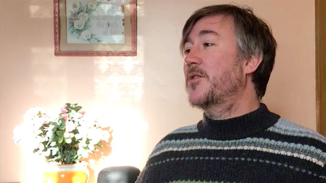
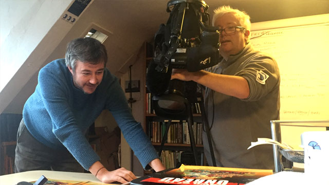
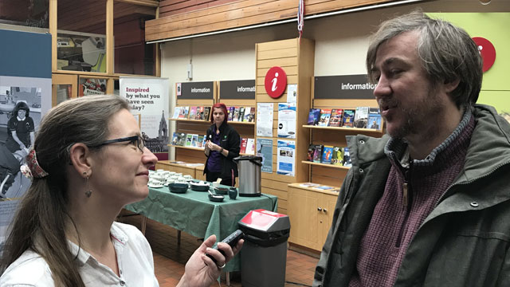

People
James Walker - Writer, creative producer and academic

James and I met at the Nottingham Writers Studio in 2010. He was literary editor at LeftLion magazine — the kind of person who already knew everyone worth knowing in Nottingham's creative community, and had the editorial instincts to match. We've collaborated ever since.
What James brings is a literary intelligence and a genuine feel for place — for Nottingham, its rebel writers, its working class voice, its habit of producing people who don't fit the sanctioned narrative. That sensibility is at the heart of everything we have built together. He is currently Course Leader for the BA in Creative Writing at Nottingham Trent University.
The Sillitoe Trail came first — a digital literature platform built around Alan Sillitoe's Saturday Night and Sunday Morning, selected as one of 50 projects for The Space, the BBC and Arts Council England's experimental on-demand digital arts platform, and the only literary project from outside London. James and I had met David Sillitoe through the Nottingham Writers Studio, and James co-created and co-produced the Trail with me, coordinating the creative contributions that came in, from across the city.
Guardian award-winning Dawn of the Unread followed — a digital comic engaging artists and writers across Nottingham, with James as writer and co-producer. The platform formed the basis of storytelling projects at Nottingham Trent University, and helped secure Nottingham's status as a UNESCO City of Literature. James also coined the phrase that has stayed with me since: The Digital Lathe — the digital tools we use and the workplaces we inhabit today as a contemporary equivalent of Sillitoe's factory lathe. Different worker, different owner, different machine, but the same relationships across generations.


The D.H. Lawrence Memory Theatre — a digital cabinet of curiosities exploring Lawrence's life through 80 video essays, 163 blog posts and 465 Instagram posts, reaching over 100,000 viewers.
Whatever People Say I Am is a series of online comics challenging stereotypes grounded in academic research, informing postgraduate arts and humanities study. James continues to develop the Locating Lawrence video essay series, publishing monthly to coincide with Lawrence's original letters. Every project we've worked on has been built on shared intent, serious about the work and committed to the people — our audience.
Paul Fillingham